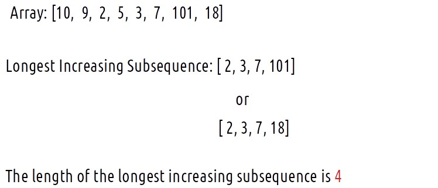

In the coming articles, we will discuss problems related to ‘Longest Increasing Subsequence’. Before proceeding further, let us understand the “Longest Increasing Subsequence”, or rather what is a “subsequence”?
A subsequence of an array is a list of elements of the array where some elements are deleted ( or not deleted at all) and they should be in the same order in the subsequence as in the original array.
For example, for the array: [2,3,1] , the subsequences will be [{2},{3},{1},{2,3},{2,1},{3,1},{2,3,1}} but {3,2} is not a subsequence because its elements are not in the same order as the original array.
What is the Longest Increasing Subsequence?
The longest increasing subsequence is described as a subsequence of an array where:
All elements of the subsequence are in increasing order.
This subsequence itself is of the longest length possible.
Examples

We need to return the length of the longest increasing subsequence as the answer.
Disclaimer: Don’t jump directly to the solution, try it out
yourself first.
Approach 1: Using Brute Force
We are given an array arr[]. To find the longest increasing subsequence, the brute force method that comes to our mind is to generate all subsequences and then manually filter the subsequences whose elements come in increasing order and then return the longest such subsequence.
This naive approach will give us the correct answer but to generate all the subsequences, we will require exponential (2n ) time. Therefore we will try some other approaches.
Approach 2: Using Dynamic Programming
We would want to try something that can give us the longest increasing subsequence on the way of generating all subsequences. To generate all subsequences we will use recursion and in the recursive logic we will figure out a way to solve this problem.
Now, We need to think in terms of indexes. One definite parameter is the index of the array which can range from 0 to n-1 (where n is the size of the array). Now, initially let us say we considered the first element 4 in our subsequence, and now we are deciding on the second element 6:
To decide for 6, we need to know what is already present in our subsequence. We denote it by a variable prev_index. This variable prev_index tells us the index of the last element of the subsequence in the original array. Now as the prev_index is 0, we know the last element in the subsequence is arr[0] = 4. As 6 is greater than 4, we can consider adding it to our subsequence, therefore the prev_index is updated to 1 ( the index of 6 in the array).
Hence, we also need a second parameter called prev_index to decide at every index ‘ind’ whether this array element can be considered in the increasing subsequence or not. Initially, prev_index will be -1 as there is no element present in the subsequence.
Step 2: Explore all possibilities at a given index
Intuition for Recursive Logic
At every index, we have two choices based on the pick/non-pick technique as discussed in this video “Recursion on Subsequences”.
Do not consider the current element in the subsequence: In this case, we are not considering the current element in the subsequence, therefore the length of the subsequence will not increase and the prev_index element will remain as it is. Hence we will return 0 + f(ind+1,prev_index) as our answer.
Consider the current element in the subsequence: In this case, we are considering the current element in the subsequence, therefore the length of the subsequence will increase by 1 and the prev_index element will be updated to the current index element.. Hence we will return 1 + f(ind+1,ind) as our answer. Here is a simple catch, when we want to consider the current index element to the subsequence, we need to check that it is greater than thelast element of the subsequence so far,i.e the prev_index element.
Note: When prev_index is -1, it means that we have not considered any element to our subsequence. Therefore, we can always consider the current element (arr[ind]) for our subsequence.
Step 3: Return the maximum of the choices
As we have to find the length of the longest increasing subsequence, we will return the maximum of the above-discussed two cases.
Base Case:
When ind==n,
It means that we have considered all the elements of the array and there are no more elements left to explore, therefore we return 0.
As we see there are overlapping subproblems in the recursive tree, we can memorize the recursive code to reduce the time complexity.
Our function has two variables that are changing: ind and prev_ind.
‘ind’ represents the index of the array. It can range from 0 to n-1.
‘prev_index’ also represents the index of the array. When we have not considered any element in our LIS, prev_index is -1. Therefore, prev_index can range from -1 to n-1. Now we cannot store the -1 index in our 2D array. Therefore, we would do a coordinate shift of one as follows:
Therefore the size of the dp array required for this will be dp[N][N+1], where N is the size of the array.
Next, we do the following steps:
We initialize the dp array to -1.
Whenever we want to find the answer to particular parameters (say f(ind,prev_index), we first check whether the answer is already calculated using the dp array(i.e dp[ind][prev_index]!= -1 ). If yes, simply return the value from the dp array.
If not, then we are finding the answer for the given value for the first time, we will use the recursive relation as usual but before returning from the function, we will set dp[ind][ind2] to the solution we get.
Code:
#include <bits/stdc++.h>
using namespace std;
// Function to find the length of the longest increasing subsequence
int getAns(int arr[], int n, int ind, int prev_index, vector<vector<int>>& dp) {
// Base condition
if (ind == n)
return 0;
if (dp[ind][prev_index + 1] != -1)
return dp[ind][prev_index + 1];
int notTake = 0 + getAns(arr, n, ind + 1, prev_index, dp);
int take = 0;
if (prev_index == -1 || arr[ind] > arr[prev_index]) {
take = 1 + getAns(arr, n, ind + 1, ind, dp);
}
return dp[ind][prev_index + 1] = max(notTake, take);
}
int longestIncreasingSubsequence(int arr[], int n) {
// Create a 2D DP array initialized to -1
vector<vector<int>> dp(n, vector<int>(n + 1, -1));
return getAns(arr, n, 0, -1, dp);
}
int main() {
int arr[] = {10, 9, 2, 5, 3, 7, 101, 18};
int n = sizeof(arr) / sizeof(arr[0]);
cout << "The length of the longest increasing subsequence is " << longestIncreasingSubsequence(arr, n);
return 0;
}
Output:
The length of the longest increasing subsequence is 4
Time Complexity: O(N*N)
Reason: There are N*N states therefore at max ‘N*N’ new problems will be solved.
Space Complexity: O(N*N) + O(N)
Reason: We are using an auxiliary recursion stack space(O(N)) (see the recursive tree, in the worst case we will go till N calls at a time) and a 2D array ( O(N*N+1)).
import java.util.*;
class TUF {
// Function to find the length of the longest increasing subsequence
static int getAns(int arr[], int n, int ind, int prev_index, int[][] dp) {
// Base condition
if (ind == n) {
return 0;
}
if (dp[ind][prev_index + 1] != -1) {
return dp[ind][prev_index + 1];
}
int notTake = 0 + getAns(arr, n, ind + 1, prev_index, dp);
int take = 0;
if (prev_index == -1 || arr[ind] > arr[prev_index]) {
take = 1 + getAns(arr, n, ind + 1, ind, dp);
}
dp[ind][prev_index + 1] = Math.max(notTake, take);
return dp[ind][prev_index + 1];
}
// Function to find the length of the longest increasing subsequence
static int longestIncreasingSubsequence(int arr[], int n) {
int dp[][] = new int[n][n + 1];
// Initialize dp array with -1 to mark states as not calculated yet
for (int row[] : dp) {
Arrays.fill(row, -1);
}
return getAns(arr, n, 0, -1, dp);
}
public static void main(String args[]) {
int arr[] = {10, 9, 2, 5, 3, 7, 101, 18};
int n = arr.length;
System.out.println("The length of the longest increasing subsequence is " + longestIncreasingSubsequence(arr, n));
}
}
Output:
The length of the longest increasing subsequence is 4
Time Complexity: O(N*N)
Reason: There are N*N states therefore at max ‘N*N’ new problems will be solved.
Space Complexity: O(N*N) + O(N)
Reason: We are using an auxiliary recursion stack space(O(N)) (see the recursive tree, in the worst case we will go till N calls at a time) and a 2D array ( O(N*N+1)).
def get_longest_increasing_subsequence_length(arr, n, ind, prev_index, dp):
# Base condition
if ind == n:
return 0
if dp[ind][prev_index + 1] != -1:
return dp[ind][prev_index + 1]
not_take = 0 + get_longest_increasing_subsequence_length(arr, n, ind + 1, prev_index, dp)
take = 0
if prev_index == -1 or arr[ind] > arr[prev_index]:
take = 1 + get_longest_increasing_subsequence_length(arr, n, ind + 1, ind, dp)
dp[ind][prev_index + 1] = max(not_take, take)
return dp[ind][prev_index + 1]
def longest_increasing_subsequence_length(arr):
n = len(arr)
dp = [[-1 for _ in range(n + 1)] for _ in range(n)]
return get_longest_increasing_subsequence_length(arr, n, 0, -1, dp)
if __name__ == "__main__":
arr = [10, 9, 2, 5, 3, 7, 101, 18]
result = longest_increasing_subsequence_length(arr)
print("The length of the longest increasing subsequence is", result)
Output:
The length of the longest increasing subsequence is 4
Time Complexity: O(N*N)
Reason: There are N*N states therefore at max ‘N*N’ new problems will be solved.
Space Complexity: O(N*N) + O(N)
Reason: We are using an auxiliary recursion stack space(O(N)) (see the recursive tree, in the worst case we will go till N calls at a time) and a 2D array ( O(N*N+1)).
[tabby title="JavaScript Code"]
function getAns(arr, n, ind, prevIndex, dp) {
// Base condition
if (ind === n) return 0;
// Check if the result is already computed and stored in dp
if (dp[ind][prevIndex + 1] !== -1) return dp[ind][prevIndex + 1];
// Initialize variables for "not taking" and "taking" the current element
let notTake = 0 + getAns(arr, n, ind + 1, prevIndex, dp);
let take = 0;
// Check if the current element can be included (if it's greater than the previous element)
if (prevIndex === -1 || arr[ind] > arr[prevIndex]) {
take = 1 + getAns(arr, n, ind + 1, ind, dp);
}
// Store the result in dp and return the maximum
dp[ind][prevIndex + 1] = Math.max(notTake, take);
return dp[ind][prevIndex + 1];
}
function longestIncreasingSubsequence(arr) {
const n = arr.length;
// Create a 2D dp array filled with -1 to store computed results
const dp = new Array(n).fill().map(() => new Array(n + 1).fill(-1));
// Call the recursive function to compute the length of the longest increasing subsequence
return getAns(arr, n, 0, -1, dp);
}
// Main function
function main() {
const arr = [10, 9, 2, 5, 3, 7, 101, 18];
const result = longestIncreasingSubsequence(arr);
console.log("The length of the longest increasing subsequence is", result);
}
// Call the main function
main();
Output:
The length of the longest increasing subsequence is 4
Time Complexity: O(N*N)
Reason: There are N*N states therefore at max ‘N*N’ new problems will be solved.
Space Complexity: O(N*N) + O(N)
Reason: We are using an auxiliary recursion stack space(O(N)) (see the recursive tree, in the worst case we will go till N calls at a time) and a 2D array ( O(N*N+1)).
Special thanks to Anshuman Sharma for contributing to this article on takeUforward. If you also wish to share your knowledge with the takeUforward fam, please check out this article. If you want to suggest any improvement/correction in this article please mail us at write4tuf@gmail.com